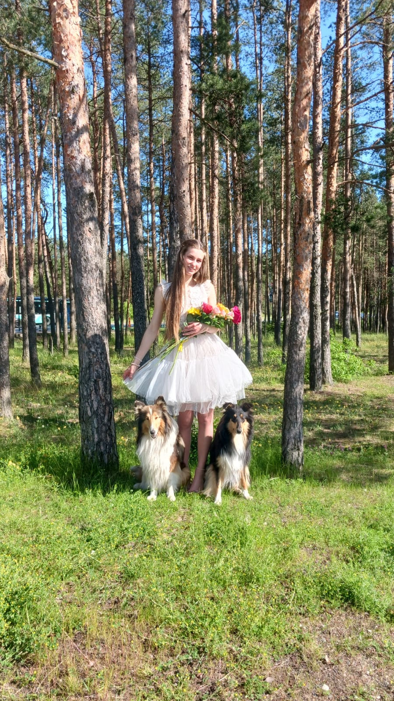

Wissenschaftlich fundiert
Empfehlungen sollten auf Ernährungswissenschaft, zuverlässigen Berechnungen, fundierter Zutatenkenntnis und einem klaren Verständnis des jeweiligen Hundes oder Produktes basieren.
Über die Expertin
Ich unterstütze Unternehmen der Heimtierfutterbranche bei der Entwicklung besserer Produkte und helfe Hundehaltern dabei, fundierte Entscheidungen über die natürliche Ernährung ihrer Hunde zu treffen.

Ich bin Lebensmitteltechnologin mit einem Masterabschluss in Lebensmittelwissenschaften und verfüge über berufliche Erfahrung in der Entwicklung von Hundenahrung, Rezepturformulierung, Auswahl von Zutaten, Nährwertbewertung, Produktion und Produktqualität.
Mein fachlicher Schwerpunkt liegt auf natürlicher und schonend verarbeiteter Hundenahrung. Dazu gehören Rohfutter, luftgetrocknete, gefriergetrocknete und frische Nahrung sowie weitere überwiegend tierbasierte Fütterungsformen.
Ich arbeite sowohl mit Unternehmen der Heimtierfutterbranche als auch mit einzelnen Hundehaltern. Unternehmen unterstütze ich bei Produktkonzepten, Rezepturformulierung, ernährungsphysiologischer Ausbalancierung, Auswahl geeigneter Zutaten, Produktionsüberlegungen und der Bewertung bestehender Rezepturen.
Hundehaltern biete ich praktische Ernährungsberatung, die das Alter, Aktivitätsniveau, den Körperzustand, die aktuelle Ernährung, die Vorlieben und die individuellen Bedürfnisse des Hundes berücksichtigt.
Mein Ansatz
Empfehlungen sollten auf Ernährungswissenschaft, zuverlässigen Berechnungen, fundierter Zutatenkenntnis und einem klaren Verständnis des jeweiligen Hundes oder Produktes basieren.
Meine Arbeit konzentriert sich auf hochwertige tierische Zutaten und schonend verarbeitete Fütterungsformen. Dabei berücksichtige ich auch die ernährungsphysiologische Ausgewogenheit, Sicherheit und Praxistauglichkeit.
Es gibt keine einzelne Fütterungslösung, die für jeden Hund oder jedes Unternehmen geeignet ist. Jedes Projekt wird entsprechend seinen Zielen, Einschränkungen, Zielkunden, Produktionsmethoden oder den individuellen Bedürfnissen des Hundes betrachtet.
Wie alles begann
Mein Interesse an der Hundeernährung begann mit meinem ersten Hund Alassie, die von herkömmlichem Trockenfutter nie besonders begeistert war. Dadurch begann ich, mich mit unterschiedlichen Fütterungsformen zu beschäftigen und mehr darüber zu lernen, wie Ernährung die Verdauung, das Fell, das Wohlbefinden und die Lebensqualität eines Hundes beeinflussen kann.
Dieses Interesse führte schließlich zu meinem Studium der Lebensmittelwissenschaften und zu meiner beruflichen Erfahrung in der Entwicklung von Hundenahrung. Heute verbinde ich meine wissenschaftliche Ausbildung, meine Erfahrung in der Produktentwicklung und mein praktisches Wissen, um bessere Fütterungsentscheidungen und bessere Hundefutterprodukte zu unterstützen.
Zusammenarbeit
Informieren Sie sich über meine Leistungen für Unternehmen der Heimtierfutterbranche oder buchen Sie eine individuelle Ernährungsberatung für Ihren Hund.
Die über diese Website angebotene Ernährungsberatung ersetzt keine tierärztliche Untersuchung, Diagnose oder medizinische Behandlung. Hunde mit diagnostizierten oder vermuteten gesundheitlichen Problemen sollten weiterhin tierärztlich betreut werden.